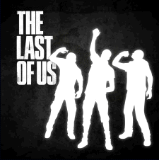

Набор жестов
Набор жестов

Набор жестов — загрузочный материал, позволяющий игрокам, посредством персонажей,
выражать эмоции в режиме «Противостояние» в «Одни из нас». На данный момент доступны три
комплекта с жестами, которые можно приобрести отдельно, с общим количеством в 11 различных
движений. Каждый такой комплект стоит 119 RUB в PlayStation Store или PlayStation Network. Игрок
также имеет возможности приобрести каждый жест по отдельности за 49-99 RUB. Релиз данного аддона
произошёл 5 августа 2014 года.
Список наборов жестов
- Набор жестов 1
- Набор жестов 2
- Набор жестов 3